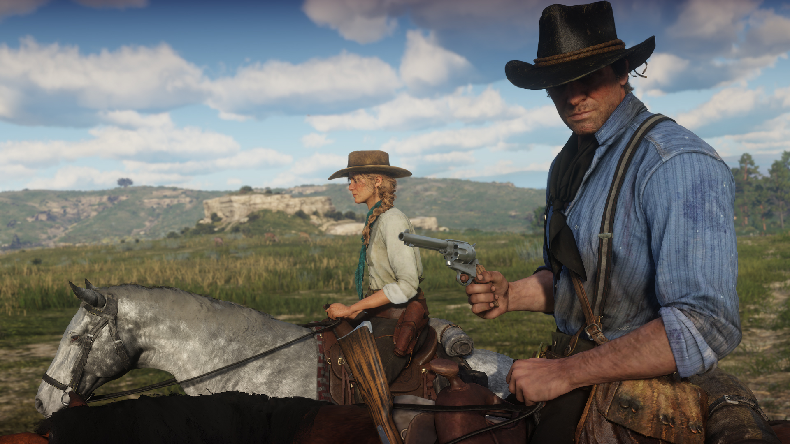
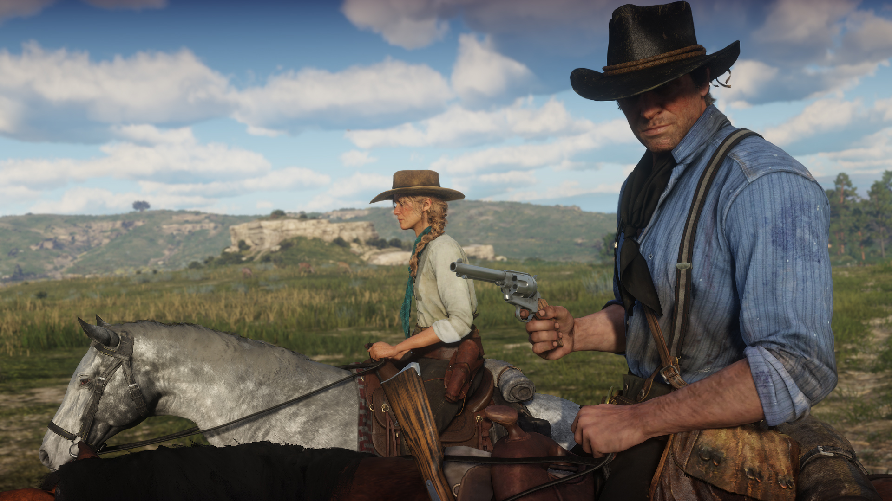

Red Dead Redemption 2 é um jogo eletrônico cujo a história se passa em 1899 em uma representação ficcional do oeste, meio-oeste e sul dos Estados Unidos. Acompanha o fora da lei Arthur Morgan, que precisa lidar com o declínio do Velho Oeste e sobreviver à perseguição de forças governamentais, gangues rivais além de outros adversários.